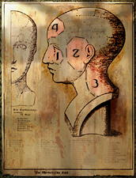
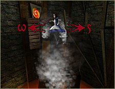
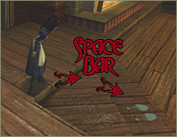
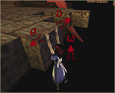
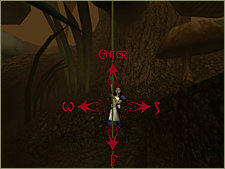
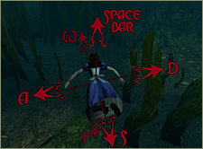

Left-click any of the four numbered areas to expose further
options for fine-tuning your system and your game play.
1. Video – From here you can adjust the way your
computer displays the game. Your system has detected Screen
Resolution and Color Depth. You may change those settings if you
wish. You can also use the available sliders to control the
following:
Brightness changes how light or dark your video
appears, similar to brightness on your monitor.
Texture Detail is used to control the size of the
textures being displayed in the game, smaller textures look less
detailed because they have to be stretched to cover the space
they fill, but the game operates faster with less detail.
These adjustments might make Alice run more efficiently on
your system.
2. Audio – From here you can select a sound driver,
adjust music and sound effects volume, and choose your speaker
type and sound quality. Force 8-bit will uses 8-bit sampled
sound instead of 16-bit sound. By doing this there is less sound
data, which takes up less memory and thus helps increase the
speed in which your game operates.
3. Controls – Use this menu to fine-tune your control
of the Alice character and the Game environment. The Control
options are detailed under PLAYING THE GAME, below.
To change an option, left-click on it to select it, and then
left-click the column to the right of that option. You’ll be
prompted to Press Any Key. Press the key that you wish to
designate as the control key for this game-play function.
If you have changed any control options on this menu, click the
Apply button to accept and save the changes or click the Cancel
button to return to the Setting Menu.
4. Game Options – Customize these options to reflect
your own taste and play style.
Invert Mouse reverses the direction the camera looks when you move the mouse
forward and backward.
Mouse Sensitivity adjusts the speed of your mouse movement.
Camera Distance controls the distance, in 3rd Person view, that the camera follows behind Alice.
Camera Height adjusts the height of the camera view on the screen.
Always Run lets you Run at ALL times. The default setting is
run.
Subtitles toggles the text box accompanying character speech off and on.
Jump Reticle helps you judge distance, and gauge your potential to make a jump successfully. See PLAYING THE GAME, below for more about Jumping.
Target Reticle helps you home in on your enemies.
Console The console can be evoked allowing the player to enter advanced commands and settings into the game, and should not be used unless necessary.
PLAYING THE GAME
Alice’s movements are controlled with a keyboard and the
mouse. To see the control keys, choose 3 from the Settings Menu.
On the Controls Menu move the slider and expose all the keys.
The movements and their corresponding [default controls] are:
Primary Attack
– Left-click [Mouse 1] to execute a weapon’s primary attack.
Alternate Attack – Right-click [Mouse 2] to execute a
weapon’s alternate attack.
Move Forward – [W] moves Alice forward or advances her.
Move Backward – [S] moves her backward or retreats.
Strafe Left (step-left) – [A] key to move left while facing
forward.
Strafe Right (step-right) – [D] key to move right while
facing forward.
Jump/Swim Up – [Spacebar] makes Alice jump or swim up.
Climb/Swim Down – [F] makes Alice climb or swim down.
Use Item – [Enter] opens doors, activates levers, climbs up vines, etc.
Jumping
There are plenty of challenging obstacles in Wonderland and jumping
is a control movement you’ll need to master. Let’s say you’re
at an impasse or a crevasse, and you need to jump:
Face the area where you want to land. Move the mouse slightly
forward and back. The Jump Reticle--a pair of brightly lit shoe
soles (size 6)--will display to help you with your jump. Move
the mouse until you feel comfortable with the landing area (for
example dry land, as opposed to lava). Press the Spacebar.
Practice makes perfect.
Climbing
If an area looks as though she can reach it with a jump, try it.
If she falls just short, Alice will grab onto and hang from
walls, ledges, bluffs and such. If an object is blocking her
ascent, press the strafe keys to move Alice to a clear spot Now,
don’t leave her dangling. After she grabs on, press W and
Alice will pull herself up.
To let go without climbing up, press F.
Vine / Swinging
Vines and ropes are invaluable---if you know how to use them.
Face the vine and then use the Jump key [Spacebar] to jump out
toward the vine. Release the Jump key when she’s close to it
and Alice will grab on.
Use the Move Forward [W] and Move Backward [S] keys to swing.
When you feel Alice has sufficient momentum to complete a vine
jump, press the Jump key [Spacebar] and Alice will release the
vine. Her momentum will carry her hopefully to a safe landing.
Swimming
Swimming in Alice is easy; just dive in. Once Alice is
completely submerged use the Move Forward key [W] in combination
with the Swim Up [Spacebar] or the Swim Down [F] to navigate
underwater. A note of caution: If you hear Alice coughing while
swimming, it means she’s running low on air. Alice is strong
and brave, but even she needs to surface periodically.
CAT SUMMONING BUTTON [HELP]
The Cheshire Cat is a friend, although his words can sometimes
be enigmatic. Press [C] when you need help. Your tattooed ally
may have something useful to say.
|